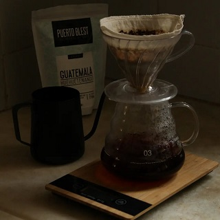
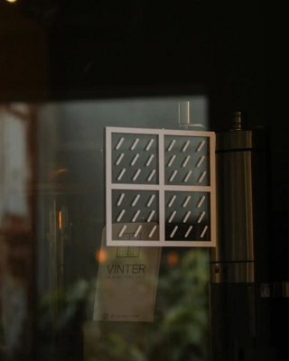
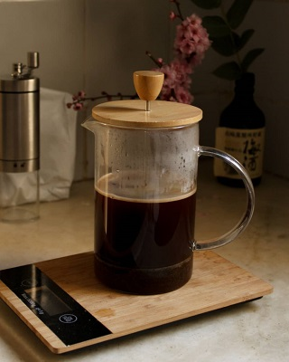
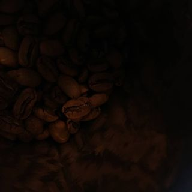

Tienda Vinter
Tienda
Blog
Contacto
Sobre Nosotrxs
Blog

Filtros reutilizables para v60 junto a @soylloret...

Inauguramos un pequeño rincón en Kråke café (@krakecafe)...

Una cafetera para principiantes...

La importancia de el grano de café...